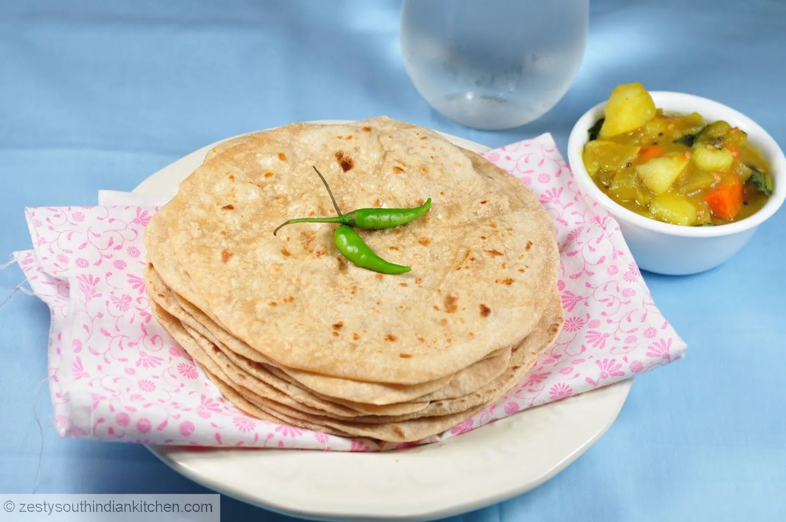
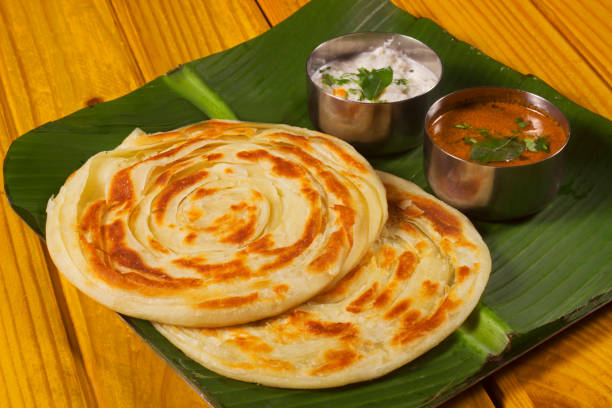

Adayar Anandha Bhavan
Pure Veg. Since - 1979
Menu for Dinner
-
Chappathi : Chapati contains vitamins and minerals like magnesium, phosphorous,
potassium, calcium and iron.Also contains zinc and other minerals
which are good for our skin. -
This way, it is better to eat a chapati instead of rice.It is also a popular choice for dinner

(Click)
-- Making & Sides --
-
Is chapati made of Maida?
- NO
- Chapati is an Indian flatbread, We traditionally prepare with finely milled Whole Wheat Flour
-
Using a soft dough comprising wheat flour, salt and water
-
Finally, It is Toasted into a heating pan added with and some teaspoon of oil ,(pan) kitchen
equipment designed expressly to make Chappathi,
-
Then,It is served with curries (dal or vegetables)
" Quality Improvement Based On Our
Customer's Satisfaction :)
"
| CHAPPATHI |
RATINGS |
| 2019 |
 3.0 /5 3.0 /5 |
| 2021 |
3.0 /5 |
| 2023 |
3.0 /5 |
- Paratha :
Nutrient Boost, Whole wheat flour parathas provide critical nutrients such as B vitamins (B1, B2, B3,
B6), which are important for energy
metabolism and nervous system function.

(Click)-- Making
& Sides --
-
Typically Parathas are simple flatbreads that are made with whole wheat (or atta) flour
-
A soft dough is prepared by hand, formed and flattened,
-
Added with some oil or ghee and water.
-
Then folded several times to create lots of flaky and Crispy layers.
-
Then,It is served with curries (dal or vegetables)
" Quality Improvement Based On Our
Customer's Satisfaction :)
"
| PARATHA |
RATINGS |
| 2019 |
2.0
/5 |
| 2021 |
2.0
/5 |
| 2023 |
3.0 /5 |